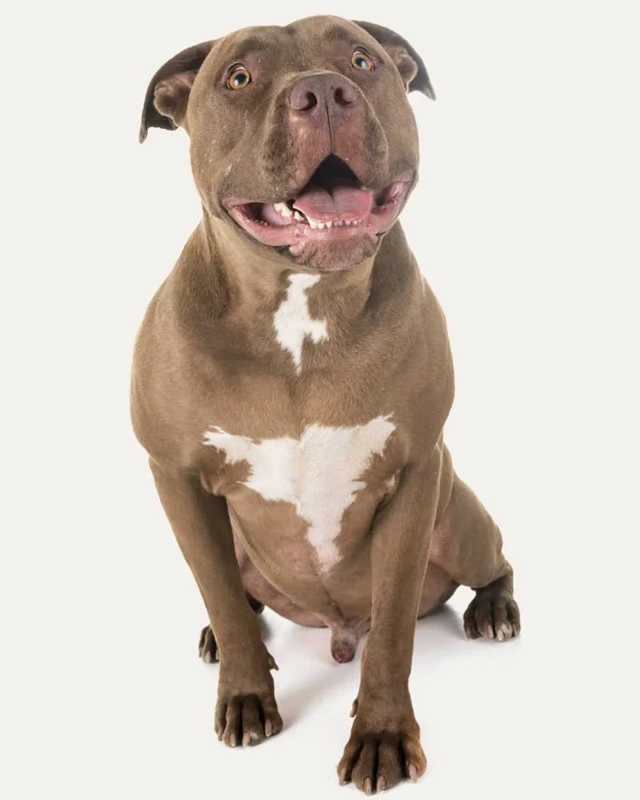

Assim como seus ancestrais, um grande companheiro e verdadeiro cão de guarda. O cachorro Pitbull, ou verdadeiramente conhecido como American Pit Bull Terrier (APBT), é um pet extremamente carinhoso, leal e inteligente. No entanto, por muito tempo teve sua imagem atrelada a um comportamento rude e agressivo. Ao contrário do que muitos pensam, esse cãozinho é muito dócil, principalmente quando falamos das crianças. Tanta afeição pelos pequenos o fez ficar conhecido como cachorro-babá, desmistificando o passado da raça, que foi criada para ser usada como cães de guarda e luta. Existem diversas teorias sobre a verdadeira história do Pitbull, levando em consideração os cruzamentos que o originaram e sua verdadeira função.
A raça Pitbull sempre chamou muito a atenção por conta do seu porte físico e atlético. Os músculos deste cão são bastante aparentes e demandam uma alimentação especial para permanecerem saudáveis. Por esse motivo, ele se torna um pet extremamente ativo com alta necessidade de passeios, brincadeiras e exercícios físicos. Um dos mitos que giram em torno das condições físicas do Pitbull é sobre o travamento de suas mandíbulas, afirmando que quando prende algo na boca, é impossível soltá-lo. Pesquisas realizadas com diversas raças relatam que isso não é verdadeiro, apesar da força que esse cãozinho possui e o estilo “tesoura” de sua dentição.
Podemos afirmar que as crianças são grandes amigas do Pitbull, no entanto, é necessário cuidado para mantê-las por perto do pet. Primeiro elas precisam conquistar a confiança do cachorro, e após isso ele permitirá ser tocado por elas e, juntos, terão ótimos momentos de alegria. Um excelente cão de companhia, ele gosta muito de ter o dono por perto. No entanto, vale destacar a adaptabilidade para mudanças. Caso um membro novo chegue à família — desde que não seja outro animal — , ele o receberá muito bem!
Fizemos um gráfico nivelando de 0 a 5 as características da raça, veja a baixo!
E não é apenas o porte atlético que chama a atenção do cachorro Pitbull. Considerado um cão de porte médio, ele é muito veloz pelo tamanho que tem e, em alguns casos, por causa da forte musculatura, pode ter o peso desproporcionalmente maior em relação à altura. Ele também é um cãozinho com a pelagem bem curta e pode ser encontrado com diversas tonalidades de pelagem. A trufa do Pitbull também pode ser encontrada em duas versões — a vermelha e a preta. As orelhas dele são pontudas e não devem ser cortadas em hipótese alguma, sendo crime previsto por lei.
Para garantir a higiene do Pitbull, utilize os cosméticos adequados e mantenha o ambiente limpo. Priorize uma ração balanceada para prevenir obesidade e problemas no quadril, combinando com exercícios regulares. A atenção à pele é essencial, e visitas periódicas ao veterinário são recomendadas para identificar precocemente quaisquer problemas. Estes cuidados globais contribuem para a saúde e bem-estar do seu Pitbull.
Os filhotes de Pitbull são criaturas encantadoras! O mais bacana de recebê-las em casa e poder, desde o início, cuidá-las com muito amor e carinho. No entanto, é recomendado que eles cheguem em nosso lar apenas após os primeiros 30 dias de vida. Caso uma futura mamãe Pitbull já integre sua família, não deixe de oferecer uma ração especial durante a gestação e, após o nascimento dos filhotinhos, deixar que ela os amamente. Após isso, oferecer uma ração para filhotes é fundamental para garantir um bom desenvolvimento e um crescimento saudável. Isso é tão importante quanto à vermifugação, que geralmente ocorre de 2 a 4 vezes, dependendo do quadro do pet e da avaliação do veterinário.